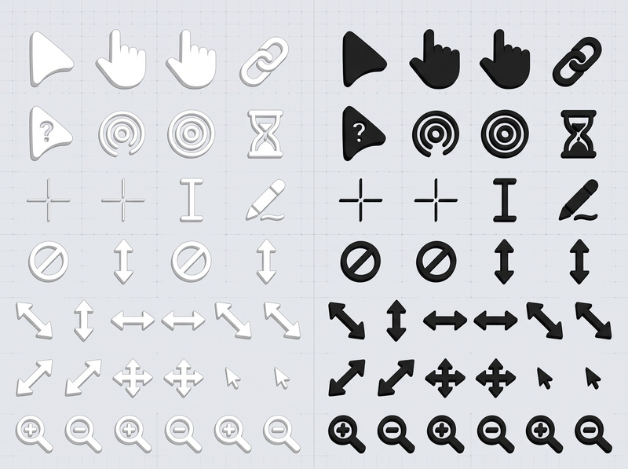
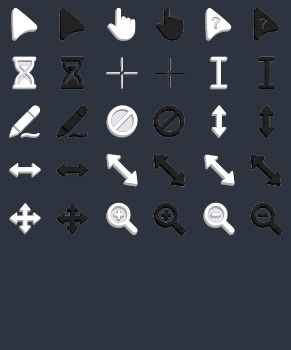

Supercharge your mouse pointer with critically damped spring physics, adaptive light/dark contrast morphing, and zero-latency refresh rate pacing. Lightweight, non-intrusive, and completely open source.

The smooth spring physics follows your real pointer everywhere. Test how it adapts to light vs. dark surfaces and interactive elements below.
When hovering over this bright card, TinyCursor dynamically morphs into high-contrast black.
Over deep obsidian surfaces, the pointer transitions seamlessly into crisp Arctic White.
Engineered without bulky runtime frameworks for instantaneous feedback and minimal CPU usage.
Dynamically synchronizes with your display's native refresh rate using high-resolution Win32 multimedia timers (1ms) to eliminate jitter and stutter.
Euler semi-implicit integration with dynamic sub-stepping (500Hz) ensures smooth organic trailing without oscillation or overshooting.
Automatically interpolates between Obsidian Black and Arctic White based on background luminance, ensuring 100% readability anywhere on your screen.
Zero external runtime dependencies. Consumes less than 15MB of RAM and negligible CPU power (<0.2%), sleeping when idle.
Integrated UIAccess window band support allows smooth rendering above Start Menu, Notification Center, and full-screen environments.
Licensed under permissive MIT. Zero telemetry, zero cloud data collection, and zero network calls. All computations happen in local RAM.
Every standard desktop cursor context is covered with custom handcrafted white and black sprites.

Last Updated: September 2026
TinyCursor is dedicated to user privacy and open-source transparency. When using TinyCursor, you can be completely confident that: